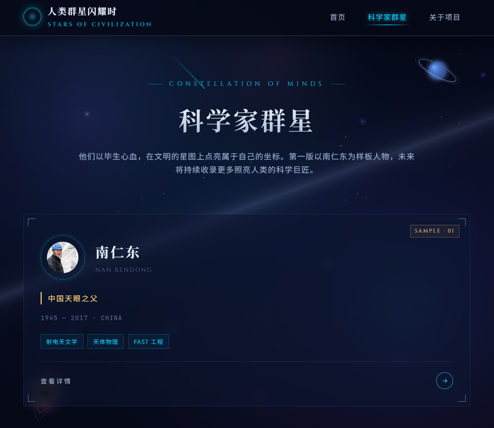
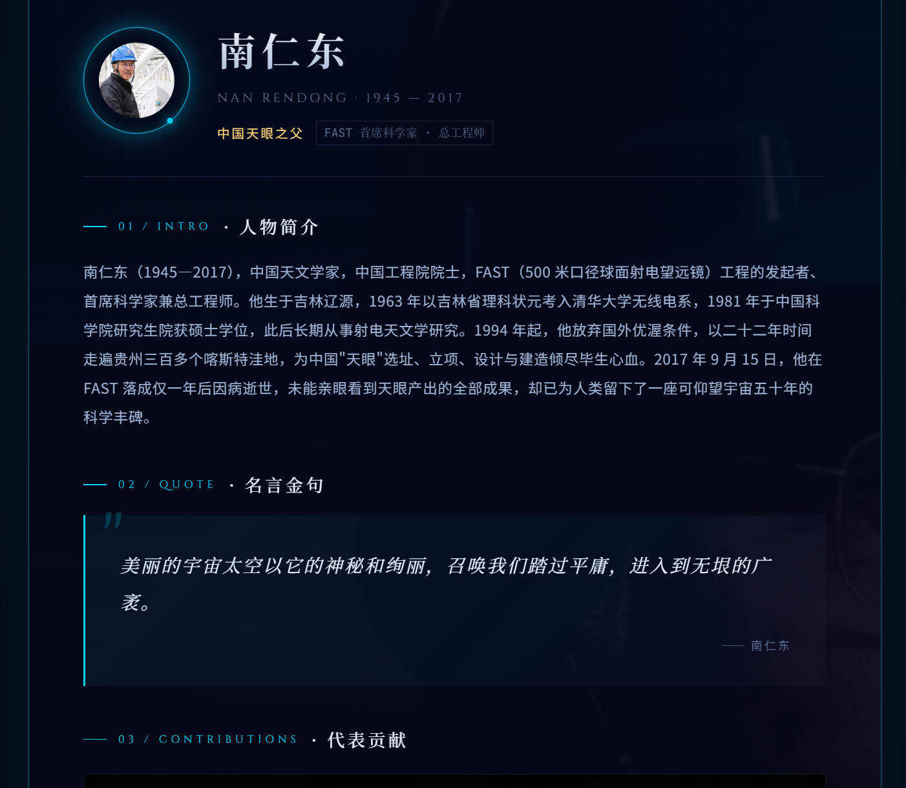
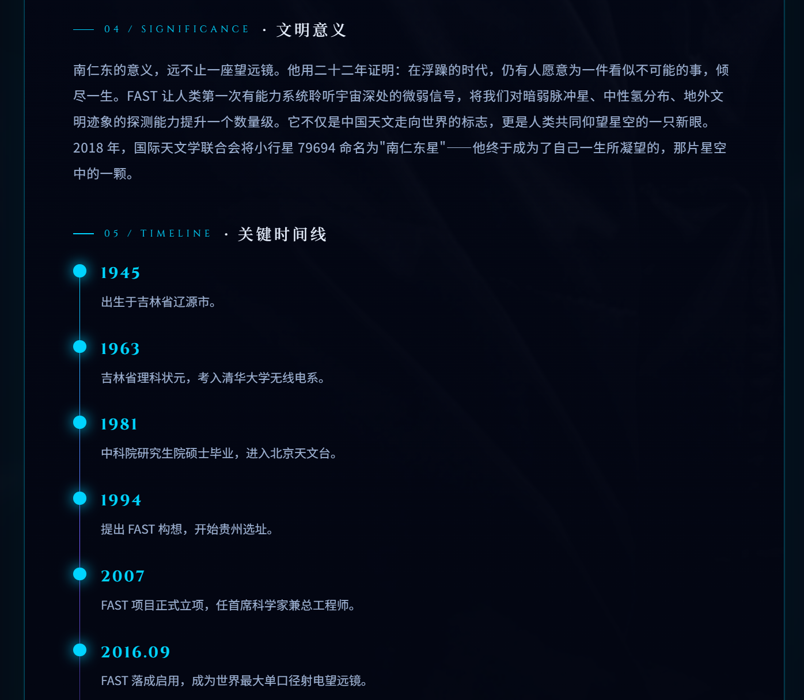
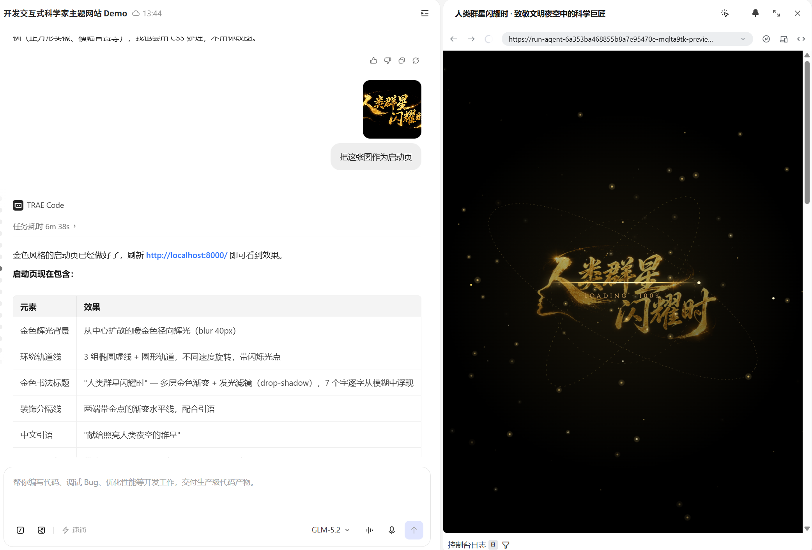
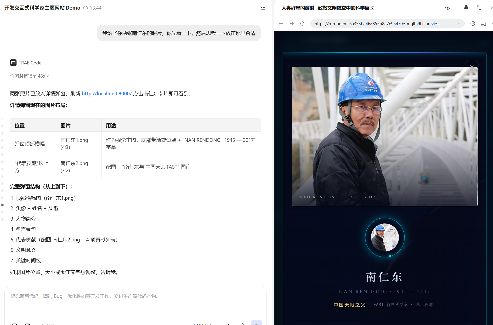
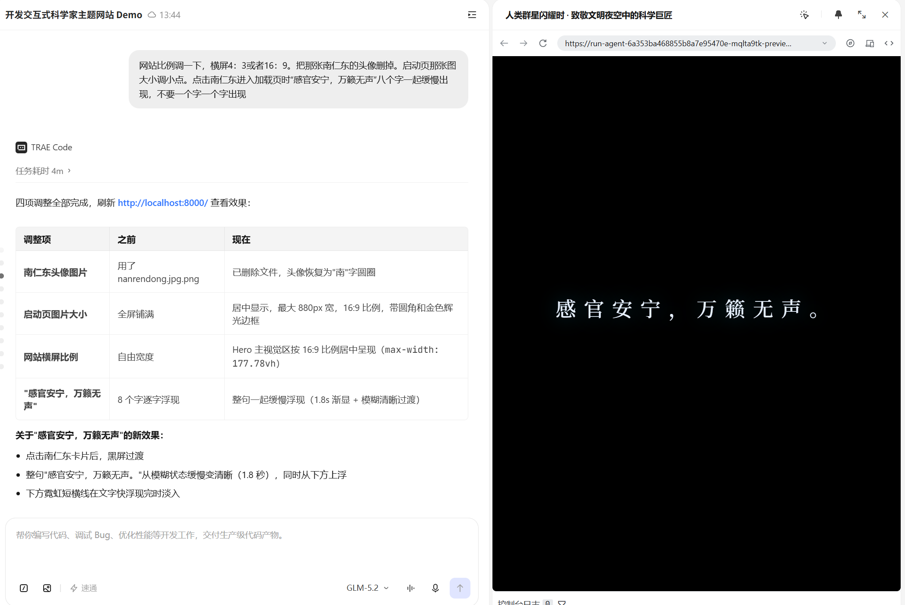

Demo 简介
《人类群星闪耀时》希望把科学家从教材中的几行文字，转化为文明星空中可以被浏览、被理解、被记住的一颗颗星。
当前 Demo 以南仁东为样板人物，展示他主持 FAST“中国天眼”建设、推动中国射电天文学发展的重要贡献。作品后续可按同一模板扩展更多中外科学家，形成一座可浏览、可探索的“人类群星”科普网站。
星空风格首页
以深色星空、宇宙光效和科技感导航呈现作品主题，突出“在文明的长夜里，总有人仰望星空”的核心表达。
科学家人物卡片
展示南仁东头像、姓名、身份标签、学科领域和“查看详情”入口，作为未来科学家群星库的标准样板。
详情与时间线
通过人物简介、名言金句、代表贡献、文明意义和关键时间线，帮助用户理解 FAST 背后的科学价值和精神意义。
Demo 创作思路
灵感来源
很多科学家对人类文明做出了巨大贡献，但他们在普通网页或教材里常常只是几行介绍。我想到用“群星”作为隐喻，把科学家设计成文明星空中的一颗颗星，让用户在浏览网页时感受到科学探索的浪漫和力量。
想解决的问题
传统科学家知识展示往往偏文字化、百科化，青少年用户不容易产生兴趣，也很难理解科学贡献与现实世界之间的关系。以南仁东为例，很多人知道“中国天眼”，但未必了解他二十多年选址、推动 FAST 建设、拓展人类观测宇宙能力背后的坚持。
为什么做这个方向
教育科普方向既有知识价值，也有精神价值。相比一开始就做大量人物数据，我选择先把南仁东这一位科学家做精，打磨出完整的人物展示模板，再逐步扩展更多中外科学家。这个方向也能充分展示 TRAE 在网页结构设计、视觉风格生成、交互开发和快速迭代方面的能力。
页面结构
| 页面模块 | 当前 Demo 呈现 | 后续扩展方向 |
|---|---|---|
| Loading 品牌页 | 金色书法标题、粒子星空、环绕轨道和进入动效 | 可根据不同专题替换视觉主题 |
| 首页 | 作品标题、导航栏、星空视觉和核心标语 | 加入更多科学家数量、专题入口和推荐内容 |
| 科学家群星 | 以南仁东作为第一位样板人物卡片 | 扩展为中外科学家卡片墙，支持分类筛选 |
| 人物详情 | 人物简介、名言金句、代表贡献、文明意义 | 为每位科学家建立统一详情模板 |
| 时间线 | 展示南仁东关键人生节点和 FAST 项目节点 | 建立跨人物、跨时代的科学文明时间轴 |
Demo 界面展示
以下截图展示了当前 HTML Demo 的核心页面，包括品牌启动页、首页、科学家群星页、南仁东详情页和关键时间线。



TRAE 实践过程
本 Demo 的开发主要通过 TRAE 完成。首先，我使用 TRAE 梳理作品方向，确定《人类群星闪耀时》作为科学家文明贡献展示网站，并决定第一版以南仁东为样板人物。随后，我借助 TRAE 设计星空科技风格页面，包括品牌 Loading 页、首页、科学家群星页、人物卡片和南仁东详情页。
开发过程中，TRAE 帮助完成 HTML、CSS 和交互逻辑的生成与调整，并根据页面效果持续优化视觉层级、导航结构、卡片布局、启动页动效、时间线呈现和整体氛围。最终，Demo 被整理为可打包上传的 HTML Zip 文件。



关键 Session ID
以下 Session ID 对应需求梳理、Demo 开发和优化提交三个阶段，用于证明作品由 TRAE 辅助完成。
复赛建议补充说明
这次创作不只展示一个网页结果，也保留了真实的想法形成、反复沟通和逐步修改过程。
真实使用场景
我希望这个网站能给所有人使用。它不要求用户每天打开，也不把自己设计成一个必须完成任务的学习工具。更理想的场景是：当一个人无聊了、想随便看点什么时，可以点进《人类群星闪耀时》，看见那些走在人类文明前面的人，记住他们的名字、故事和贡献。
这个作品想表达的不是“科学家离我们很远”，而是“他们值得被我们记住”。南仁东只是第一位样板人物，后续我希望继续扩展更多中外科学家，让这个网站逐渐成为一个普通人也愿意偶尔打开的科学家纪念与科普空间。
与 TRAE 的协作方式
我没有一开始就让 AI 直接完成整个项目，而是先让 AI 理解我的想法：网站要有星空感，要有科学家群星的概念，要先把一位科学家打磨好，再继续扩展。我更像是在带着 AI 一步一步往前走，而不是急着一次性生成一个完整作品。
关键思路：先让 AI 理解“人类群星闪耀时”的主题和气质，再逐步推进页面结构、南仁东人物样板、启动页、详情页、时间线和视觉优化。
开发中的问题与解决
| 遇到的问题 | 处理方式 | 形成的心得 |
|---|---|---|
| AI 有时没有完全理解我的意思，例如图片太大，或者放置位置不符合页面气质。 | 我会明确指出问题在哪里，再告诉它希望怎么改，例如调整图片尺寸、位置、比例和页面层级。 | 和 AI 协作时，越具体地描述问题，越容易得到接近预期的结果。 |
| 页面视觉效果需要反复打磨，启动页、人物图、详情页之间的风格要统一。 | 我没有直接推翻重做，而是让 TRAE 按模块逐步优化：先启动页，再人物卡片，再详情页和时间线。 | 先打磨一位科学家，比一开始做很多人物更稳，也更容易形成可复用模板。 |
| 创意容易变大，如果一次性要求完整科学家库，个人开发会很容易失控。 | 我把 Demo 收束为“南仁东样板人物”，先完成一个足够完整的体验，再规划后续扩展。 | 不要急于求成。罗马大路不是一天修成的，AI 开发也适合一步一步来。 |
开发心得
这次创作让我感受到，AI 远比我想象中更厉害，但前提是人要把方向讲清楚。它不是一次性替我完成所有判断，而是在我不断说明想法、指出问题、提出修改方向的过程中，帮我把一个抽象创意变成能打开、能体验、能展示的网页 Demo。
原创与版权说明
本作品的主题构思、页面结构、报名文案和 Demo 方向均来自个人创意，并在 TRAE 辅助下完成整理与开发。页面中使用的南仁东人物素材和相关图片仅用于参赛 Demo 展示与学习交流；正式公开发布或继续扩展时，将进一步替换为拥有明确授权、公共版权或自制生成的素材，保证内容来源清晰。
提交说明
本作品计划以交互式 HTML 网站形式提交，并使用 Zip 格式打包上传至社区。Demo 包含 Loading 品牌页、首页、科学家群星页、南仁东人物卡片、人物详情、文明意义和关键时间线等核心页面与交互。提交前需要自行打开 Zip 内 HTML 文件检查一遍，确认页面可以正常打开，核心功能可以体验。